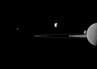

Saturn
Moons

Saturn's Moons 1
Saturn is the sixth planet from the Sun and the second largest planet in the Solar System, after Jupiter. Named after the Roman god of agriculture, its astronomical symbol (♄) represents the god's sickle. Saturn is a gas giant with an average radius about nine times that of Earth.

Saturn's Moons 2
A global storm girdles the planet in 2011. The head of the storm (bright area) passes the tail circling around the left limb.